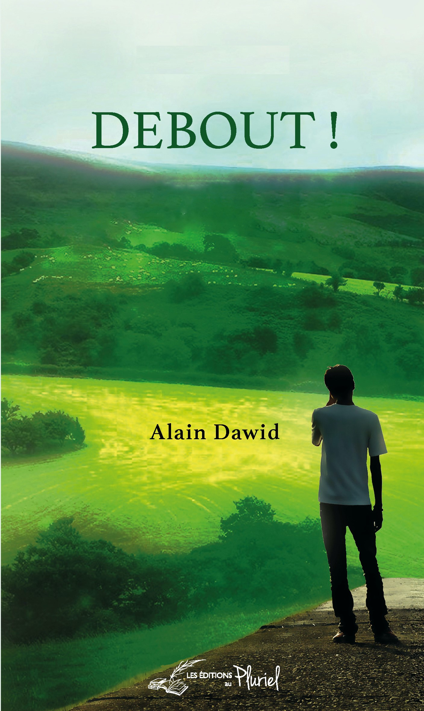
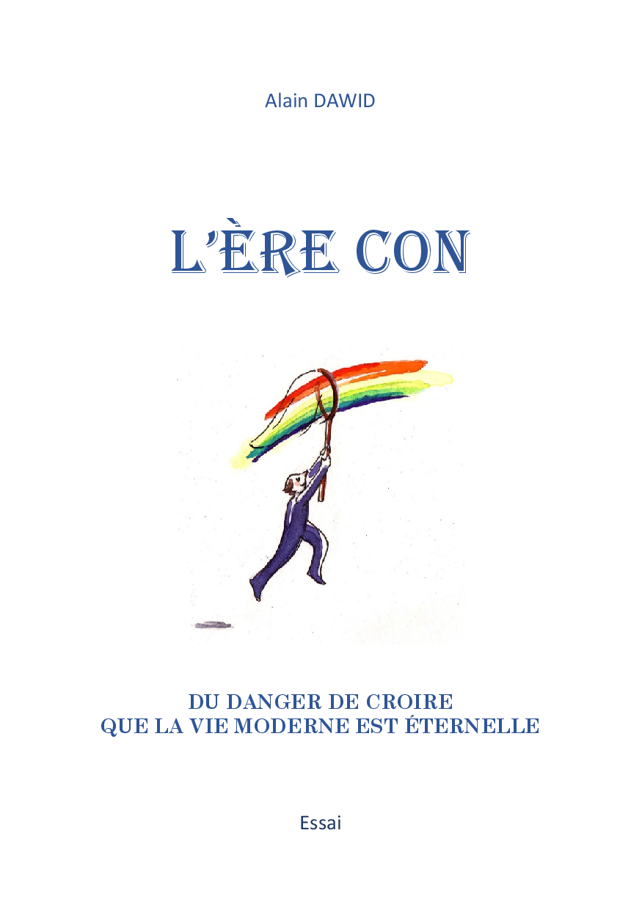
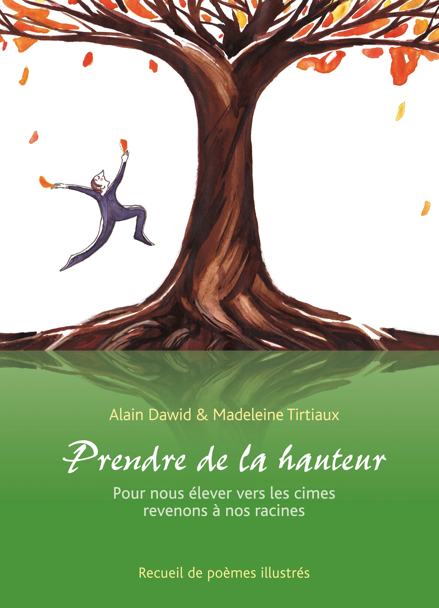

Mes Livres
L'écriture est l'autre versant de mon travail. C'est ici que la main qui bâtit laisse place à la plume qui explore les idées, les émotions et les réflexions.
Publiés

DEBOUT!
Une réflexion sur la résilience et la force intérieure face aux épreuves de la vie.
Acheter ce livre
L'ÈRE CON
Une analyse percutante et sans concession de notre société contemporaine.
Acheter ce livre
Prendre de la Hauteur
Comment changer de perspective pour mieux appréhender le monde qui nous entoure.
Acheter ce livreAuto-édités

Les Pieds sur Terre
Un retour aux sources et à l'essentiel, à travers le contact direct avec la terre.
Me contacter
Et Maintenant ?
Face à l'incertitude, quelles directions prendre ? Pistes de réflexion pour l'avenir.
Me contacter
Les Mains de la Terre
Chroniques d'un artisan, où le savoir-faire manuel devient une philosophie de vie.
Me contacter